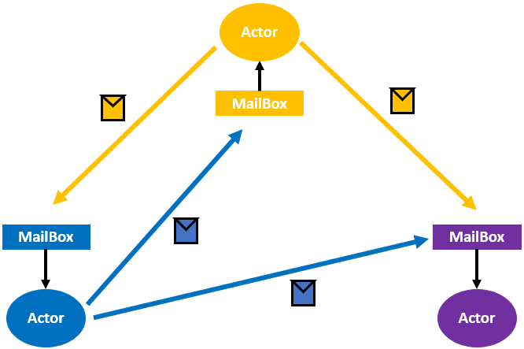
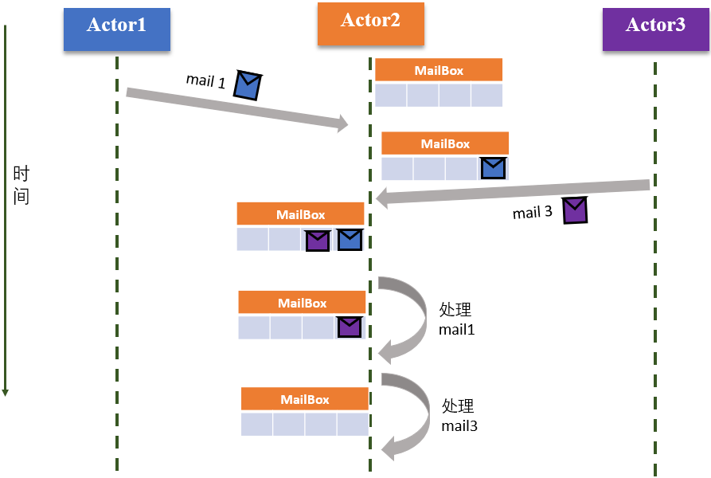
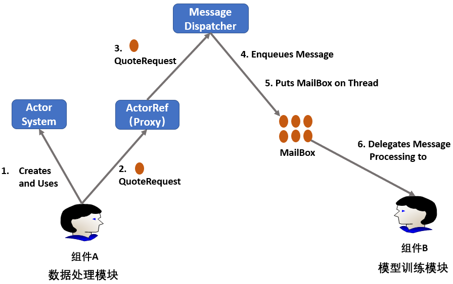
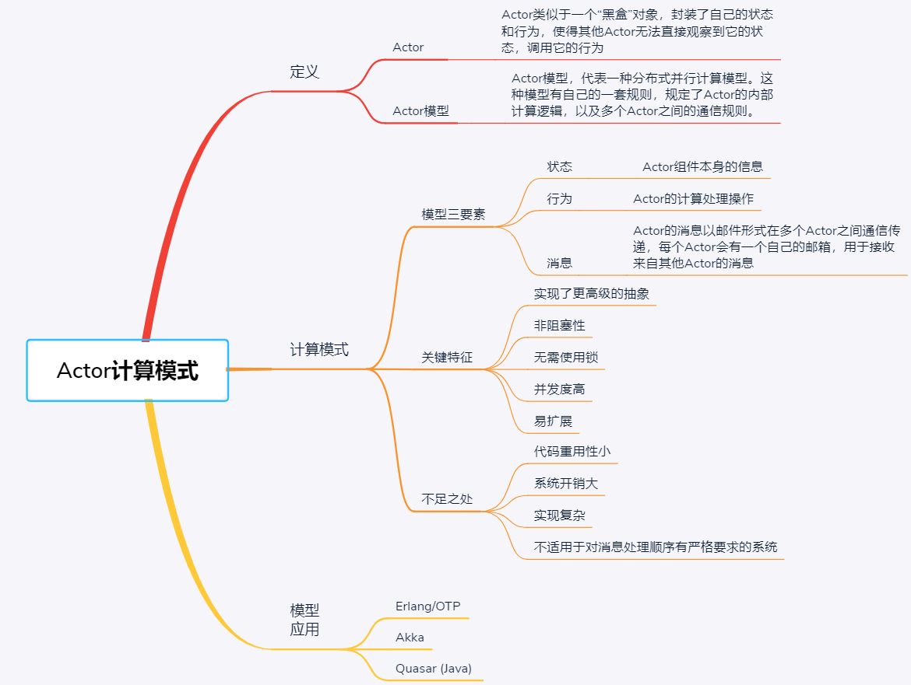

- 00 开篇词 四纵四横，带你透彻理解分布式技术.md.html
- 01 分布式缘何而起：从单兵，到游击队，到集团军.md.html
- 02 分布式系统的指标：啥是分布式的三围.md.html
- 03 分布式互斥：有你没我，有我没你.md.html
- 04 分布式选举：国不可一日无君.md.html
- 05 分布式共识：存异求同.md.html
- 06 分布式事务：All or nothing.md.html
- 07 分布式锁：关键重地，非请勿入.md.html
- 08 分布式技术是如何引爆人工智能的？.md.html
- 09 分布式体系结构之集中式结构：一人在上，万人在下.md.html
- 10 分布式体系结构之非集中式结构：众生平等.md.html
- 11 分布式调度架构之单体调度：物质文明、精神文明一手抓.md.html
- 12 分布式调度架构之两层调度：物质文明、精神文明两手抓.md.html
- 13 分布式调度架构之共享状态调度：物质文明、精神文明多手协商抓.md.html
- 14 答疑篇：分布式事务与分布式锁相关问题.md.html
- 15 分布式计算模式之MR：一门同流合污的艺术.md.html
- 16 分布式计算模式之Stream：一门背锅的艺术.md.html
- 17 分布式计算模式之Actor：一门甩锅的艺术.md.html
- 18 分布式计算模式之流水线：你方唱罢我登场.md.html
- 19 分布式通信之远程调用：我是你的千里眼.md.html
- 20 分布式通信之发布订阅：送货上门.md.html
- 21 分布式通信之消息队列：货物自取.md.html
- 22 答疑篇：分布式体系架构与分布式计算相关问题.md.html
- 23 CAP理论：这顶帽子我不想要.md.html
- 24 分布式数据存储系统之三要素：顾客、导购与货架.md.html
- 25 数据分布方式之哈希与一致性哈希：“掐指一算”与“掐指两算”的事.md.html
- 26 分布式数据复制技术：分身有术.md.html
- 27 分布式数据之缓存技术：“身手钥钱”随身带.md.html
- 28 分布式高可靠之负载均衡：不患寡，而患不均.md.html
- 29 分布式高可靠之流量控制：大禹治水，在疏不在堵.md.html
- 30 分布式高可用之故障隔离：当断不断，反受其乱.md.html
- 31 分布式高可用之故障恢复：知错能改，善莫大焉.md.html
- 32 答疑篇：如何判断并解决网络分区问题？.md.html
- 33 知识串联：以购买火车票的流程串联分布式核心技术.md.html
- 34 搭建一个分布式实验环境：纸上得来终觉浅，绝知此事要躬行.md.html
- 特别放送 Jackey：寄语天涯客，轻寒底用愁.md.html
- 特别放送 分布式下的一致性杂谈.md.html
- 特别放送 崔新：追根溯源，拨开云雾见青天.md.html
- 特别放送 徐志强：学习这件事儿，不到长城非好汉.md.html
- 特别放送 那些你不能错过的分布式系统论文.md.html
- 结束语 为什么说提升职业竞争力要从尊重、诚实开始？.md.html
- 捐赠
17 分布式计算模式之Actor：一门甩锅的艺术
你好，我是聂鹏程。今天，我来继续带你打卡分布式核心技术。
我在前两篇文章中，带你一起学习了MapReduce和Stream计算模式，相信你对批处理和流计算也有了一定的了解。虽然这两种计算模式对数据的处理方式不同，但都是以特定数据类型（分别对应静态数据和动态数据）作为计算维度。
在接下来两篇文章中，我将从计算过程或处理过程的维度，与你介绍另外两种分布式计算模式，即Actor和流水线。分布式计算的本质就是在分布式环境下，多个进程协同完成一件复杂的事情，但每个进程各司其职，完成自己的工作后，再交给其他进程去完成其他工作。当然，对于没有依赖的工作，进程间是可以并行执行的。
你是不是想说，分布式进程那么多，如果需要开发者自己去维护每个进程之间的数据、状态等信息，这个开发量可不是一般得大，而且特别容易出错。那么，有没有什么办法可以让开发者只关注自己的逻辑呢？
答案是肯定的，Actor计算模式就能满足你的需求。也就是说，你可以把数据、状态等都扔给Actor。这是不是“一门甩锅的艺术”呢？
接下来，我们就一起打卡分布式计算模式中的Actor模式。
什么是Actor？
在第10篇文章“分布式体系结构之非集中式结构：众生平等”中，我曾提到Akka框架基于Actor模型，提供了一个用于构建可扩展的、弹性的、快速响应的应用程序的平台。
其中，Actor类似于一个“黑盒”对象，封装了自己的状态和行为，使得其他Actor无法直接观察到它的状态，调用它的行为。多个Actor之间通过消息进行通信，这种消息类似于电子邮箱中的邮件。Actor接收到消息之后，才会根据消息去执行计算操作。
那么，Actor模型又是什么呢？Actor模型，代表一种分布式并行计算模型。这种模型有自己的一套规则，规定了Actor的内部计算逻辑，以及多个Actor之间的通信规则。在Actor模型里，每个Actor相当于系统中的一个组件，都是基本的计算单元。
Actor模型的计算方式与传统面向对象编程模型（Object-Oriented Programming，OOP）类似，一个对象接收到一个方法的调用请求（类似于一个消息），从而去执行该方法。
但是，OOP因为数据封装在一个对象中，不能被外部访问，当多个外部对象通过方法调用方式，即同步方式进行访问时，会存在死锁、竞争等问题，无法满足分布式系统的高并发性需求。而Actor模型通过消息通信，采用的是异步方式，克服了OOP的局限性，适用于高并发的分布式系统。
举一个最简单的例子，假如你现在定义了三个对象A、B和C，对象C中有一个函数Function，现在对象A和对象B同时调用对象C中的Function，此时对象C中的Function就成为了我们在第3篇文章“分布式互斥：有你没我，有我没你”中提到的共享资源，有可能会存在竞争、死锁等问题。
而对于Actor模式，对象A、B和C对应着Actor A、Actor B和Actor C，当Actor A和Actor B需要执行Actor C中的Function逻辑时，Actor A和 Actor B会将消息发送给Actor C， Actor C的消息队列存储着Actor A和 Actor B的消息，然后根据消息的先后顺序，执行Function即可。
也就是说，Actor模式采用了异步模式，并且每个Actor封装了自己的数据、方法等，解决了OOP存在的死锁、竞争等问题。
Actor计算模式
接下来，我们再一起看看Actor计算模式吧。如下图所示，描述了具有3个Actor的Actor模型。

可以看到，Actor模型的三要素是状态、行为和消息，有一个很流行的等式：Actor模型=（状态+行为）+ 消息。
接下来，我们一起看看这三要素的具体含义吧。
- 状态（State）。Actor的状态指的是，Actor组件本身的信息，相当于OOP对象中的属性。Actor的状态会受Actor自身行为的影响，且只能被自己修改。
- 行为（Behavior）。Actor的行为指的是，Actor的计算处理操作，相当于OOP对象中的成员函数。Actor之间不能直接调用其他Actor的计算逻辑。Actor只有收到消息才会触发自身的计算行为。
- 消息（Mail）。Actor的消息以邮件形式在多个Actor之间通信传递，每个Actor会有一个自己的邮箱（MailBox），用于接收来自其他Actor的消息，因此Actor模型中的消息也称为邮件。一般情况下，对于邮箱里面的消息，Actor是按照消息达到的先后顺序（FIFO）进行读取和处理的。
了解了Actor的三要素后，我们再一起看下Actor的工作原理吧。
Actor工作原理
为了方便你理解Actor的工作原理，我会通过讲述3个Actor之间基于消息和消息队列的工作流程进行说明。这3个Actor的工作流程，如下所示。

- Actor1和Actor3先后向Actor2发送消息，消息被依次放入Actor2的MailBox队列的队尾;
- Actor2从MailBox队列的队首依次取出消息执行相应的操作，由于Actor1先把消息发送给Actor2，因此Actor2先处理Actor1的消息；
- Actor2处理完Actor1的消息后，更新内部状态，并且向其他Actor发送消息，然后处理Actor3发送的消息。
了解了Actor之间的消息交互和处理流程，我再以一个具体案例和你详细解读一下Actor之间的消息传递过程吧。

我们已经知道，在系统中，不同的组件/模块可以视为不同的Actor。现在有一个执行神经网络的应用，其中有两个组件A和B，分别表示数据处理模块和模型训练模块。假设，我们可以将组件A和B看作两个Actor，训练过程中的数据可以通过消息进行传递。如上图所示，完整的消息传输过程为：
- 组件A创建一个Actor System，用来创建并管理多个Actor。
- 组件A产生QuoteRequest消息（即mail消息，比如数据处理后的数据），并将其发送给ActorRef。ActorRef是Actor System创建的组件B对应Actor的一个代理。
- ActorRef 将消息（经过数据处理后的数据）传输给Message Dispatcher模块。Message Dispatcher类似于快递的中转站，负责接收和转发消息。
- Message Dispatcher将消息（数据处理后的数据）加入组件B的MailBox队列的队尾。
- Message Dispatcher将MailBox加入线程。需要注意的是，只有当MailBox是线程时，才能处理MailBox中的消息。
- 组件B的MailBox将队首消息（数据）取出并删除，队首消息交给组件B处理，进行模型训练。
Actor关键特征
通过上面的描述，可以看出Actor的通信机制与日常的邮件通信非常类似。因此，我们可以进一步总结出Actor模型的一些特点：
- 实现了更高级的抽象。我在前面提到过，Actor与OOP对象类似，封装了状态和行为。但是，Actor之间是异步通信的，多个Actor可以独立运行且不会被干扰，解决了OOP存在的竞争问题。
- 非阻塞性。在Actor模型中，Actor之间是异步通信的，所以当一个Actor发送信息给另外一个Actor之后，无需等待响应，发送完信息之后可以在本地继续运行其他任务。也就是说，Actor模型通过引入消息传递机制，从而避免了阻塞。
- 无需使用锁。Actor从MailBox中一次只能读取一个消息，也就是说，Actor内部只能同时处理一个消息，是一个天然的互斥锁，所以无需额外对代码加锁。
- 并发度高。每个Actor只需处理本地MailBox的消息，因此多个Actor可以并行地工作，从而提高整个分布式系统的并行处理能力。
- 易扩展。每个Actor都可以创建多个Actor，从而减轻单个Actor的工作负载。当本地Actor处理不过来的时候，可以在远程节点上启动Actor然后转发消息过去。
虽然Actor模型有上述的诸多优点，但它并不适用于分布式领域中所有的应用平台或计算框架。因为，Actor模型还存在如下一些不足之处：
- Actor提供了模块和封装，但缺少继承和分层，这使得即使多个Actor之间有公共逻辑或代码部分，都必须在每个Actor中重写这部分代码，也就是说重用性小，业务逻辑的改变会导致整体代码的重写。
- Actor可以动态创建多个Actor，使得整个Actor模型的行为不断变化，因此在工程中不易实现Actor模型。此外，增加Actor的同时，也会增加系统开销。
- Actor模型不适用于对消息处理顺序有严格要求的系统。因为在Actor模型中，消息均为异步消息，无法确定每个消息的执行顺序。虽然可以通过阻塞Actor去解决顺序问题，但显然，会严重影响Actor模型的任务处理效率。
尽管Actor模型在需要同步处理的应用等场景具有局限性，但它在异步场景中应用还是比较广泛的。接下来，我们就一起看看Actor目前都应用在哪些地方吧。
Actor模型的应用
Actor模型在1973年被提出，已广泛应用在多种框架和语言中。可以说，很多框架或语言支持Actor编程模型，是为了给开发者提供一个通用的编程框架，让用户可以聚焦到自己的业务逻辑上，而不用像面向对象等编程模型那样需要关心死锁、竞争等问题。
那么，到底有哪些框架或语言支持Actor编程模型呢？接下来，我就和你列举几个典型的框架或语言吧，以方便你参考。
- Erlang/OTP。Erlang是一种通用的、面向并发的编程语言，使用Erlang编写分布式应用比较简单，而OTP就是Erlang技术栈中的标准库。Actor模型在Erlang语言中得到广泛支持和应用，其他语言的Actor逻辑实现在一定程度上都是参照了Erlang的模式。实现了Actor模型逻辑的Erlang/OTP，可以用于构建一个开发和运行时环境，从而实现分布式、实时的、高可用性的系统。
- Akka。Akka是一个为Java和Scala构建高度并发、分布式和弹性的消息驱动应用程序的工具包。Akka框架基于Actor模型，提供了一个用于构建可扩展的、弹性的、快速响应的应用程序的平台。通过使用Actors和Streams技术， Akka为用户提供了多个服务器，使用户更有效地使用服务器资源并构建可扩展的系统。
- Quasar (Java) 。Quasar是一个开源的JVM库，极大地简化了高度并发软件的创建。Quasar在线程实现时，参考了Actor模型，采用异步编程逻辑，从而为JVM提供了高性能、轻量级的线程，可以用在Java和Kotlin编程语言中。
知识扩展：Akka中Actor之间的通信可靠性是通过Akka集群来保证的，那么Akka集群是如何检测节点故障的呢？
在第10篇文章“分布式体系结构之非集中式结构：众生平等”中，我与你介绍了Akka 集群是一个去中心化的架构，比如现在集群中有n个节点，这n个节点之间的关系是对等的。节点之间采用心跳的方式判断该节点是否故障，但未采用集中式架构中的心跳检测方法。
Akka 集群中的故障检测方法是，集群中每个节点被k个节点通过心跳进行监控，比如k = 3，节点1被节点2、节点3和节点4通过心跳监控，当节点2发现节点1心跳不可达时，就会标记节点1为不可达（unreachable），并且将节点1为不可达的信息通过Gossip传递给集群中的其他节点，这样集群中所有节点均可知道节点1不可达。
其中，k个节点的选择方式是，将集群中每个节点计算一个哈希值，然后基于哈希值，将所有节点组成一个哈希环（比如，从小到大的顺序），最后根据哈希环，针对每个节点逆时针或顺时针选择k个临近节点作为监控节点。
总结
接下来，我们小结一下吧。今天，我与你介绍了分布式计算中，一门甩锅的计算模型，即Actor模型。
首先，我介绍了什么是Actor模型以及Actor模型的三要素，包括状态、行为和消息。
其次，我介绍了Actor的工作原理，并通过实例介绍了Actor之间通过消息及消息队列进行异步通信的流程，以便于你进一步理解Actor的工作原理。
最后，我为你介绍了几个当前支持Actor编程模型的框架和语言，以便于你在需要采用Actor模型编程时做一个参考。
最后，我再通过一张思维导图来归纳一下今天的核心知识点吧。

著名的Erlang并发编程语言，以及Akka这一分布式计算框架都实现了Actor模型的计算逻辑。因此，即使你在之前未曾接触过Actor模型，学习了这篇文章后，你也可以根据开源的Erlang或Akka项目，去更深刻地理解Actor模型了，加油！
思考题
Actor是否可以采用阻塞方式去运行呢，原因是什么呢？
我是聂鹏程，感谢你的收听，欢迎你在评论区给我留言分享你的观点，也欢迎你把这篇文章分享给更多的朋友一起阅读。我们下期再会！
© 2019 - 2023 Liangliang Lee. Powered by gin and hexo-theme-book.